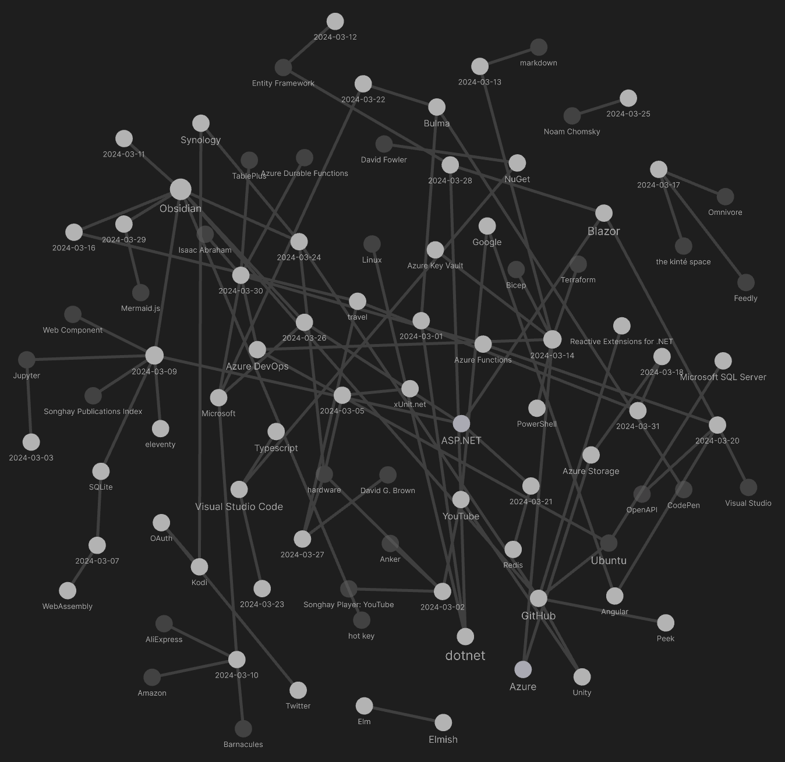
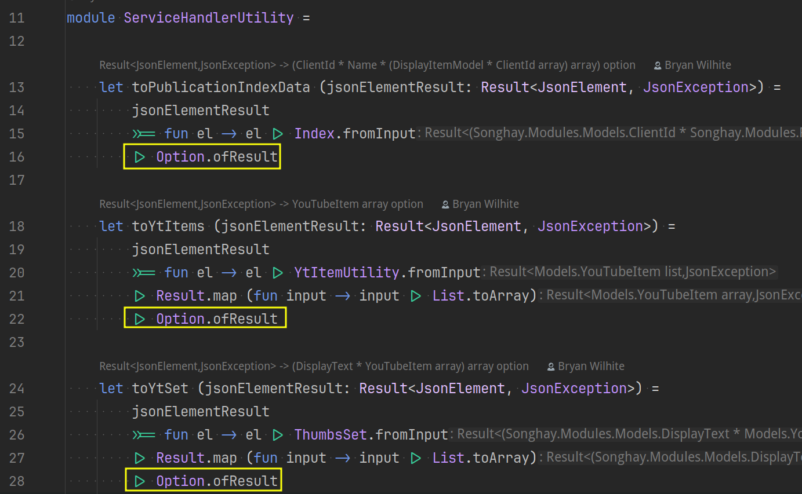
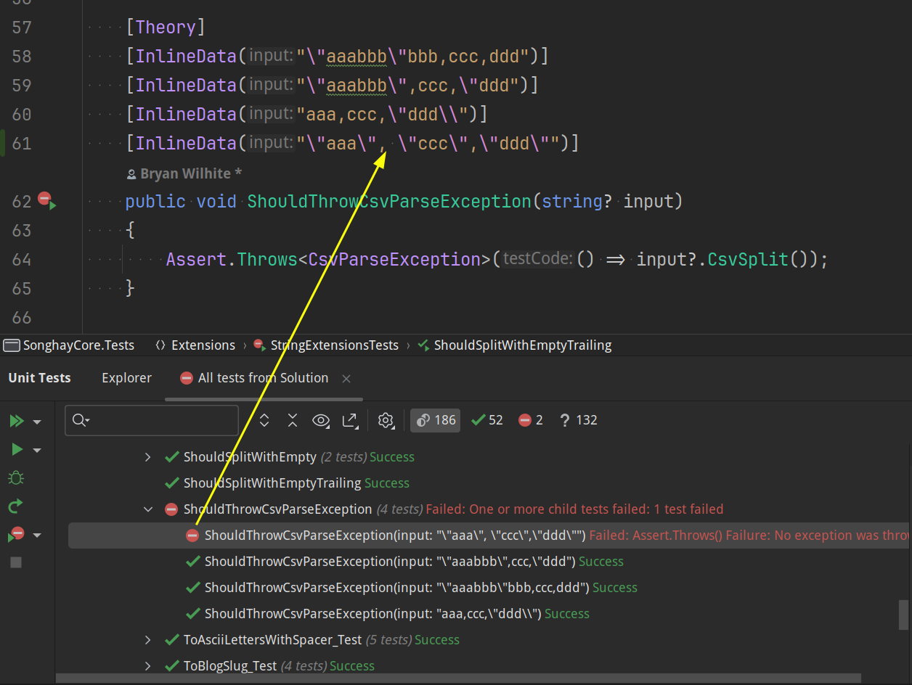
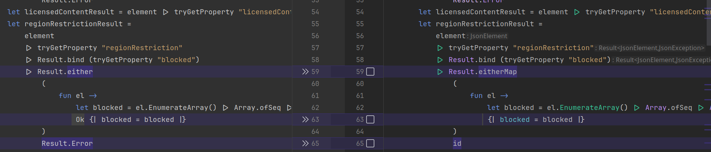
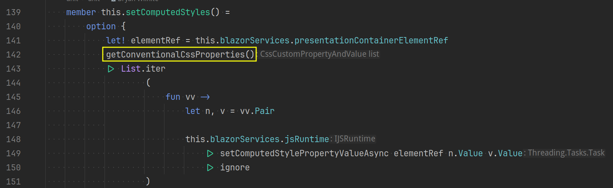
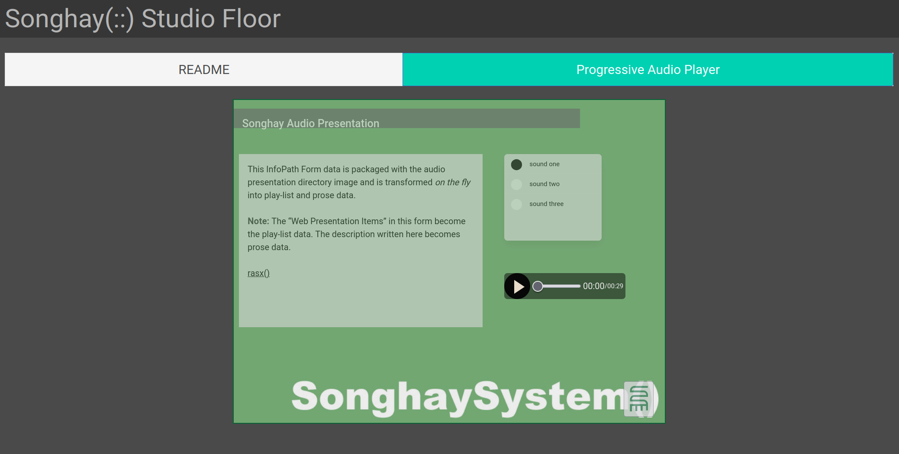
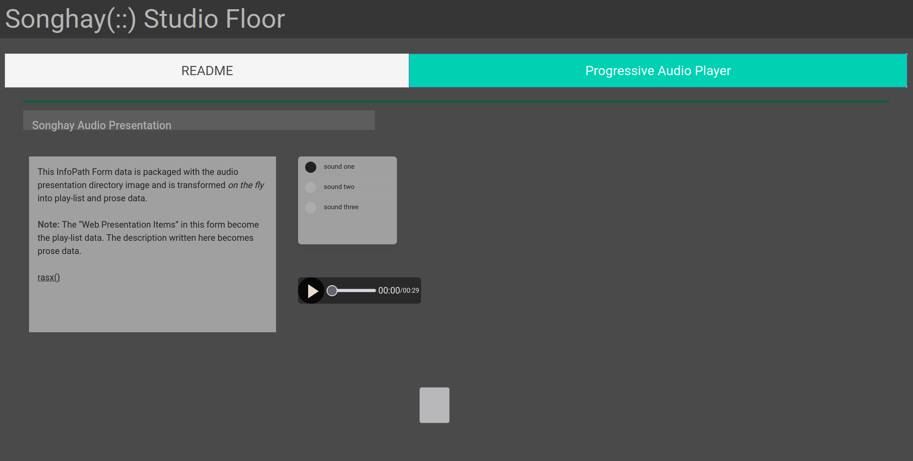
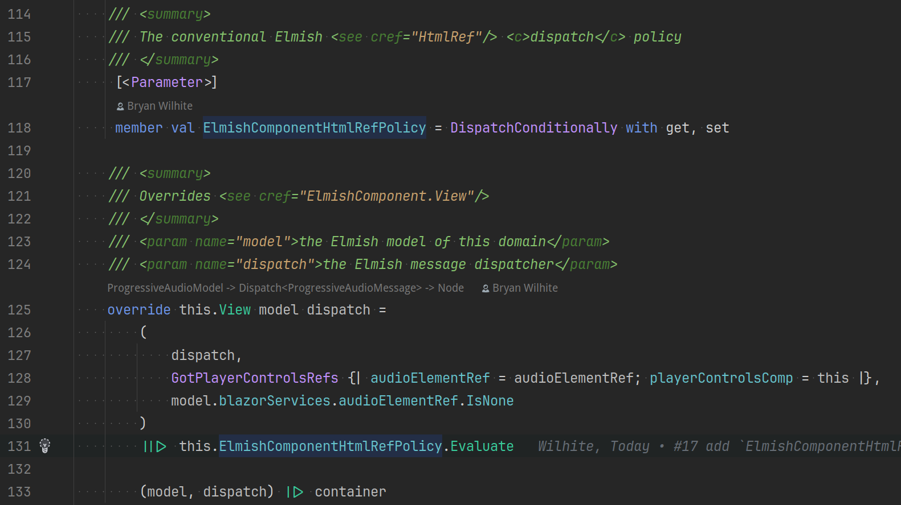

studio status report: 2024-04
month 03 of 2024 was about finally completing Songhay.Player.YouTube release 6.3.1 📦🚀
Songhay.Player.YouTube 6.3.1 was released but it was immediately followed by release 6.3.2 because of a bug 🐛 related to the tabbing experience revealed in the Studio Floor. This bug also affected Songhay.Player.ProgressiveAudio (see issue #17) which resulted in a version 6.1.5 release. The selection below of Obsidian notes go into detail on this bug.
But first, here is what month 04 looked like:

The usual Microsoft suspects are floating around in there 🐠
Songhay Player - YouTube (F♯): my Option.ofResult anti-pattern #to-do
This situation was made out of haste:

All of the .fromInput calls might dutifully return a JsonException but these would be swallowed by the abyss with Option.ofResult 😐
I would like to convert to option—but before I do that I would like to report on any exception. For the above, this would mean:
- replacing line 16 with
Option.eitherfromFsToolkit.ErrorHandling[📖 docs ], returningSome MyDomainDataorNone(after ‘reporting the error’), respectively - replacing lines 21 and 26 with
Option.eitherMap, returningSome TransformedDomainDataorNone(after ‘reporting the error’), respectively
Azure Functions: “.NET 6 reaches end of support on November 12, 2024” #to-do
Per the .NET Official Support Policy, .NET 7 reaches end of support on May 14, 2024, and .NET 6 reaches end of support on November 12, 2024. You’ll want to update any applications targeting those versions to .NET 8 before the end of support. If you’re using .NET 7 on Azure Functions, you’re already using the isolated worker model, and you should update your apps on the isolated worker model to .NET 8. The same instructions apply for .NET 6 on the isolated worker model.
Songhay Core (C♯): CSVand whitespace
The #day-job has shown me that the following CSVline can be problematic:
"\"aaa\", \"ccc\",\"ddd\""
…while this one is fine:
"\"aaa\",\"ccc\",\"ddd\""
The ShouldThrowCsvParseException test does not throw an exception (but it should) #to-do:

This whitespace issue has been quite pervasive. In “Dealing with extra white spaces while reading CSV in Pandas,” Vaclav Dekanovsky invokes historical documents:
My colleague says that .csv is not an essay so we don’t expect any blank spaces behind the commas (or any other separators). The same opinion had the creators of rfc4180 which is commonly understood as a guideline for CSV files. Still, the are inventive developers that feed the .csv exports with unnecessary white spaces. These extra characters are not only increasing the size of our data, but they can cause much bigger trouble.
“Database anti-patterns”
In the past few years I have been noticing an unsettling trend - software engineers are eager to use exotic “planet-scale” databases for pretty rudimentary problems, while at the same time not having a good grasp of the very powerful relational database engine they are likely already using, let alone understanding the technology’s more advanced and useful capabilities. The SQL layer is buried so deep beneath libraries and too clever by a half ORMs that it all just becomes high-level code.
FFmpeg 7.0 “Dijkstra” released
A new major release, FFmpeg 7.0 "Dijkstra", is now available for download. The most noteworthy changes for most users are a native VVC decoder (currently experimental, until more fuzzing is done), IAMF support, or a multi-threaded
ffmpegCLI tool.This release is not backwards compatible, removing APIs deprecated before 6.0. The biggest change for most library callers will be the removal of the old bitmask-based channel layout API, replaced by the
AVChannelLayoutAPI allowing such features as custom channel ordering, or Ambisonics. Certain deprecatedffmpegCLI options were also removed, and a C11-compliant compiler is now required to build the code.As usual, there is also a number of new supported formats and codecs, new filters, APIs, and countless smaller features and bugfixes. Compared to 6.1, the
gitrepository contains almost ∼2000 new commits by ∼100 authors, touching >100000 lines in ∼2000 files — thanks to everyone who contributed. See the Changelog, APIchanges, and the git log for more comprehensive lists of changes.
hardware: did Apple start their car project because of Xiaomi❓

Xiaomi EV Launch March 2024
Songhay Player - YouTube (F♯): I have discovered a use case for Result.eitherMap

The use of Result.eitherMap from FsToolkit.ErrorHandling [📖 docs ] does the following:
- eliminates the need to use
Result.Ok - eliminates the need to use
Result.Error(useidshorthand instead)
Azure Batch is filed under “High-performance computing (HPC)” on Azure
High-performance computing (HPC), also called "big compute", uses a large number of CPU or GPU-based computers to solve complex mathematical tasks.
Many industries use HPC to solve some of their most difficult problems. These include workloads such as:
- Genomics
- Oil and gas simulations
- Finance
- Semiconductor design
- Engineering
- Weather modeling

Azure Essentials: High Performance Computing (HPC) options
dotnet|.NET: the Array.AsReadOnly<T>(T[]) method explains the difference between Array<T> and ReadOnlyCollection<T> #make-blog-post
The Array.AsReadOnly<T>(T[]) method [📖 docs ] explains by its definition the difference between Array<T> and ReadOnlyCollection<T> because this method takes an array as input and returns ReadOnlyCollection<T>:
To prevent any modifications to the array, expose the array only through this wrapper.
A collection that is read-only is simply a collection with a wrapper that prevents modifying the collection; therefore, if changes are made to the underlying collection, the read-only collection reflects those changes.
It should be mentioned, that there is a List<T>.AsReadOnly method [📖 docs ] as well that also returns ReadOnlyCollection<T>. There is an AsReadOnly<TKey,TValue>(IDictionary<TKey,TValue>) extension method [📖 docs ] for IDictionary<TKey,TValue> but it returns ReadOnlyDictionary<TKey,TValue>.
Blazor/Bolero the setComputedStylePropertyValueAsync bug 🐛
Calling setComputedStylePropertyValueAsync for custom CSSproperties that do not exist are not ignored. I strongly suspect that this causes the entire Blazor app to freeze 🧊 without throwing any error in the browser console.
In Songhay Player - YouTube (F♯), I have lost about two weeks with this alleged bug in my setComputedStyles member:

Instead of calling getConventionalCssProperties() as shown (which works), I had this:
let cssProperties =
if model.hasSomeState then
getConventionalCssProperties() @ model.moreProperties
else
getConventionalCssProperties()
I thought it would be harmless to tack on moreProperties which were passed to setComputedStylePropertyValueAsync 😐 Wrong.
tools mentioned in “How I'm Writing CSS in 2024”
“How I'm Writing CSS in 2024” mentions:
CSS in 2024 is amazing.
- Cross-browser support for nesting, :has(), container queries, and more¹
- Powerful and fast new CSS tools
- Many frameworks and compilers to help optimize CSS loading performance
Also, https://codesandbox.io/goes unmentioned.
dotnet|.NET: “Glutinum, a new era for Fable bindings”
First, Fable should not get lost inside of the world of React. In the context of this Studio, Fable could allow me to write Typescript and even Python via F♯. So, when Mangel Maxime writes in “Glutinum, a new era for Fable bindings”:
Thanks to new innovations in Fable, and after working on 20+ bindings, I am now ready to say it is possible to provide near native F# experience while staying close to the original JavaScript API.
The former allows F# developers to consume bindings with minimal friction. While the later makes it easier to re-use knowledge and documentation coming from the original JavaScript community.
With this confirmation, I started prototyping a new tool to convert TypeScript definitions to F#.
Mangel Maxime is saying (effectively) that you can write new stuff you would write in Typescript in F♯—and convert all the stuff you wrote in Typescript to F♯. For more, see “What is Fable?”
Bolero: the tab UXbuilt by this Studio breaks patterns based on HtmlRef 😐
The tab experience in this Studio is the foundation of the Songhay Studio Floor. We can see this in the Floor built for Songhay Player - Progressive Audio (F♯):

However, for months I have failed to notice that tabbing over to README and then back to the Progressive Audio Player tab leaves us with this hot garbage 🔥🪰💩:

The problem here is due to what is happening during tabbing:
[!error] The current tabbing UXof this Studio breaks patterns based on
HtmlRefbecause, like the DOMelements,HtmlRefinstances are destroyed and replaced with new instances.
My code is explicitly working against this reality with a pattern like this:
override this.View model dispatch =
if model.blazorServices.myElementRef.IsNone then
dispatch <| GotMyElementRef myElementRef
else
()
The override above assumes that myElementRef needs to be captured only once because the parent ElmishComponent<_,_> should be loaded once—but this is not the case when tabbing is added to the experience.
Songhay Publications: “Adventures with the JavaScript Event Loop • Erin Zimmer • YOW! 2018”

Adventures with the JavaScript Event Loop • Erin Zimmer • YOW! 2018
- the browser is multi-threaded while the JavaScript Engine is single threaded
ASP.NET: “Asp.Net Core Web API Security Checklist. TOP 3 Vulnerabilities And How To Fix Them” #day-job

Asp.Net Core Web API Security Checklist. TOP 3 Vulnerabilities And How To Fix Them
- Introducing OWASP: 00:29
- How to fix “Broken object level authorization”: 02:59
- How to fix “Broken function level authorization”: 09:08
- How to fix “SQL injection”: 13:19
Building around the IAuthorizationRequirement interface [📖 docs ] is key 🔑 for the “Broken object level authorization” fix #to-do
Songhay Publications: the Gifski experiment was a resounding success 🌻
Here is the current screen-capture #publishing-pipeline:
- capture to
*.webmon the Ubuntu desktop (making sure Show Pointer is enabled) - convert the
*.webmto a*.gifanimation with Gifski - move the
*.giffile into the conventional.github/bitmapsdirectory andgit commit
The command to install Gifski:
sudo snap install gifski
Here is the final Gifski command for a *.webm file (1283×768) on my desktop:
gifski \
--fps 5 \
--width 960 \
--motion-quality 27 \
--quality 67 \
--extra \
--output anim.gif \
Screencast\ from\ 04-17-2024\ 11:06:43\ PM.webm
This outcome follows up my 2024-01-20#Songhay Publications will Gifski help Peek ❓|month 1 note 📓✅ and leads to the following questions:
[!question] Can READMEs on nuget.org support the
videoelement and the*.mp4format?
This is asked because the *.mp4 screen-capture videos for Visual Studio Code are crisp and clean! I assume they were captured on a Macintosh or a Windows desktop.
The answer to this question should be found under “Write a high-quality README for NuGet packages” which links to “Package readme on NuGet.org” but, as of today, this is not actually the case 😐
[!question] Can
*.gifanimations be converted to the WebP format from Google?
There is an answer to this question “Animated WebP – how to convert animated GIF to WebP and save up to 90% bandwidth” that involves the entirety of Cloudinary 😐
Bolero: I am satisfied with the new ElmishComponentHtmlRefPolicy ✅
My suggested fix for issue #17 of Songhay Player - Progressive Audio (F♯) has been updated to a pattern that replaces the Boolean approach with a full blown DU:
namespace Songhay.Modules.Bolero.Models
type ElmishComponentHtmlRefPolicy =
| DispatchForEveryView
| DoNotDispatch
member this.Evaluate (dispatch: Elmish.Dispatch<'message>) (message: 'message) condition =
match this with
| DispatchConditionally ->if condition then dispatch message
| DispatchForEveryView ->dispatch message
| DoNotDispatch ->()
This ElmishComponentHtmlRefPolicy type make this clarity possible:

Instead of passing just true or false to our conventional .EComp member, we have more expressive power with more explicit intent:
PlayerElmishComponent.EComp DispatchForEveryView model.paModel (ProgressiveAudioMessage >>dispatch)
sketching out development projects
The current, unfinished public projects on GitHub:
-
replacing the Angular app in
http://kintespace.com/player.htmlwith a Bolero app 🚜🔥 depends on:finishing the📦🚀 projectSonghay.Player.YouTuberelease 6.3.1
-
completing the
Songhay.Publications6.1.0 📦🚀 project -
start the “
Songhay.Publications.Models6.0.0” 📦🚀 project
The proposed project items:
- add Entity Framework (over SQLite) features to
Songhay.Publications - generate Publication indices from SQLite for
Songhay.Publications.KinteSpace - generate a new repo with proposed name,
Songhay.Modules.Bolero.Index✨🚧 and add a GitHub Project - switch Studio from Material Design to Bulma 💄 ➡️ 💄✨